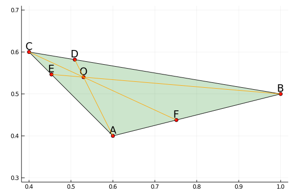
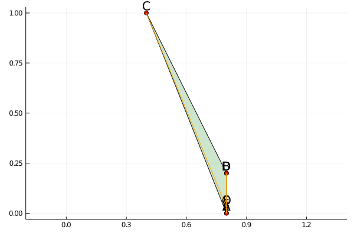

Ceva's Theorem
See Napoleon's Theorem for an example with more detailed explanations of how to prove theorems with Julia.
The Theorem
PlaneGeometry.Theorems.Ceva — ModuleCeva's theorem is a theorem about triangles in plane geometry. Given a triangle ABC, let the lines AO, BO and CO be drawn from the vertices to a common point O (not on one of the sides of ABC), to meet opposite sides at D, E and F respectively. (The segments AD, BE, and CF are known as cevians.) Then, using signed lengths of segments,
\[BD \times CE \times AF = DC \times EA \times FB.\]
Finding the ceva and medians
PlaneGeometry.Theorems.Ceva.ceva — Functionceva(Triangle(A, B, C), O)Returns ([A, B, C, D, E, F], [BD, DC, CE, EA, AF, FB]).
function ceva(tri, O)
A, B, C = vertices(tri)
AB, BC, CA = edges(tri)
AO, BO, CO = [Edge(pt, O) for pt in vertices(tri)]
D, E, F = [concurrent(epair...) for epair in zip([BC, CA, AB], [AO, BO, CO])]
# This mean no such points can be found. (This is possible)
if D == nothing || E == nothing || F == nothing
return nothing, nothing
end
elist = [Edge(pts...) for pts in zip([B, D, C, E, A, F], [D, C, E, A, F, B])]
([A, B, C, D, E, F], elist)
endExamples
PlaneGeometry.Theorems.Ceva.ceva_draw — Methodceva_draw(📐️, O)Verify Ceva's Theorem for the triangle 📐️.
A = Point(0,0); B = Point(1, 3); C = Point(4,2); O = Point(2, 2)
plt, hold = ceva_draw(Triangle(A, B, C), O)
does_thmhold(hold)Theorem holds! 😀️PlaneGeometry.Theorems.Ceva.ceva_rand — Methodceva_rand()Verify Ceva's Theorem for a random triangle.
plt, hold = ceva_rand()
does_thmhold(hold)Theorem holds! 😀️
plt, hold = ceva_rand()
does_thmhold(hold)Theorem holds! 😀️
Proof
function ceva_proof()
@vars by cx positive=true
@vars cy ox oy
A = Point(0, 0); B = Point(0, by); C = Point(cx, cy); O = Point(ox, oy)
tri = Triangle(A, B, C)
plist, elist = ceva(tri, O)
ceva_check(elist...)
enddoes_thmhold(ceva_proof())Theorem holds! 😀️